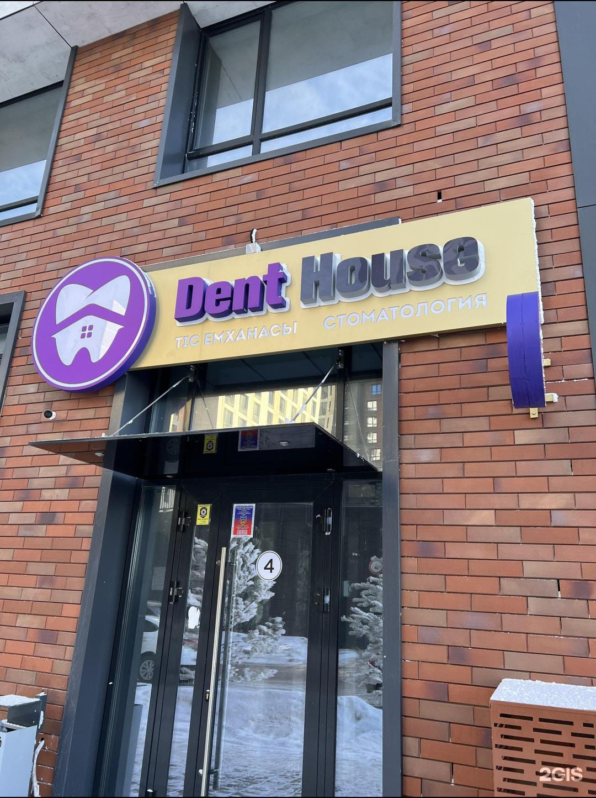
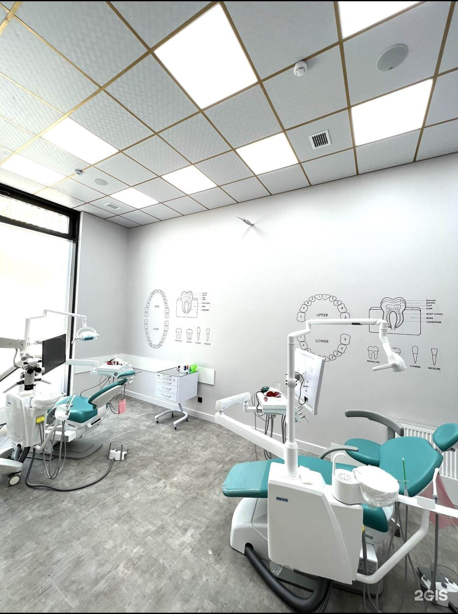
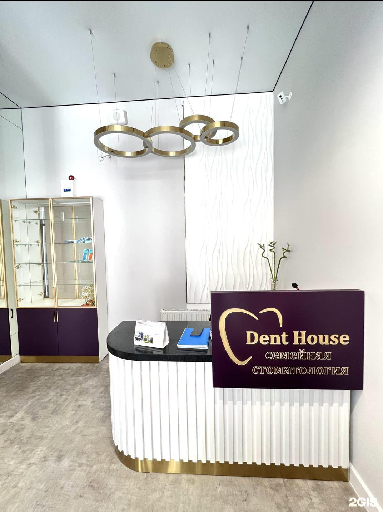

Advanced Precision Dentistry & Digital Orthopedics in Astana
High-Tech Oral Healthcare in Astana
Dent house Dental Clinic is a state-of-the-art medical center located at 48 Alikhan Bokeikhan Street, Astana. Our mission is to provide every patient with painless, high-precision, and comprehensive dental care. By utilizing advanced dental microscopes and 3D digital scanners, our specialists ensure flawless endodontic canal treatment, durable restorations, and premium prosthetic solutions.
Clinic Facilities & Interior
Explore our modern dental facilities, welcoming reception area, and high-tech treatment operatory in Astana.

Main entrance of Dent House dental clinic

Modern reception desk and patient lounge

State-of-the-art dental operatory room
Message from the Founder
Dr. Mukhamedyarov Kanat Magauyanovich
Founder | Implantologist & Prosthodontist (Over 25 years experience)
"Our core priority is the long-term health and aesthetic confidence of our patients. At Dent house, we follow international evidence-based clinical protocols. Through dental microscopy and digital 3D modeling, we execute complex full-arch restorations and root canal therapy with absolute precision."
Working Hours
We operate 7 days a week to accommodate your schedule: